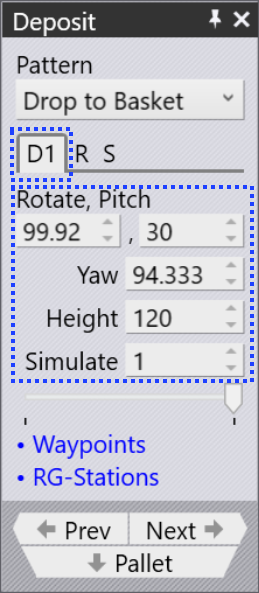
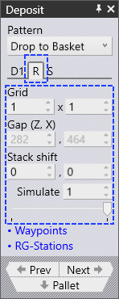
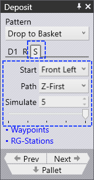

Deposit Tabs
Deposit Position Tab (D1)

The orientation and other settings for the parts are edited in the D1 tab. Use this D1 to handle the part deposit settings to drop parts over the deposit pallet.
-
Rotate: Rotation around the longitudinal axis (X-axis). The tool of the robot twists clockwise/counter-clockwise.
-
Pitch: Rotation around the lateral axis (Y-axis). The tool of the robot tilts forward/backward.
-
Yaw: Rotation around the vertical axis (Z-axis). The tool of the robot rotates horizontally.
-
Height: The Height parameter controls the height above the stack from which the part is released (the part falls by this distance when coming to rest on the stack).
-
Simulate: The sequence or order in which each part is placed onto the pallet can be seen by using the Simulate option. The number of layers and grid utilized for the deposit determines what quantity is simulated. The part deposit simulation can be viewed by moving the simulate slider back and forth.
Repeat Grid Tab (R) 
The D1 tab shown above is used to specify the orientation of the first part of the deposit. Then, the settings in the Repeat tab are used to replicate that into a grid of rows (Z), columns (X) and layers (R). The image alongside shows a deposit with many of these settings changed from defaults.
-
The Grid settings are used to set up the number of columns and rows in the deposit.
-
The Gap (Z, X) settings are used to specify the gap between successive columns or successive rows. If you set this to 0, the rows or columns are exactly touching each other.
-
The Stack shift settings are used to displace the complete stack of all the parts away from the center of the pallet.
Deposit Sequence Tab (S)

The Sequence tab is used to control the sequence in which the parts are deposited.
-
The Start corner and Path settings are used when there are multiple rows or columns, and decide which corner the stacking starts from, and whether the stacking then proceeds row-by-row, or column-by-column. This can be useful especially with an off-center gripper, since a different starting corner may cause a collision between the gripper and the previous part that was already deposited.
-
The Simulate settings (both the number spinner and the slider) can be used to scrub through the deposits to see the order in which they happen on the pallet. This is especially useful when adjusting the start corner and the path settings.